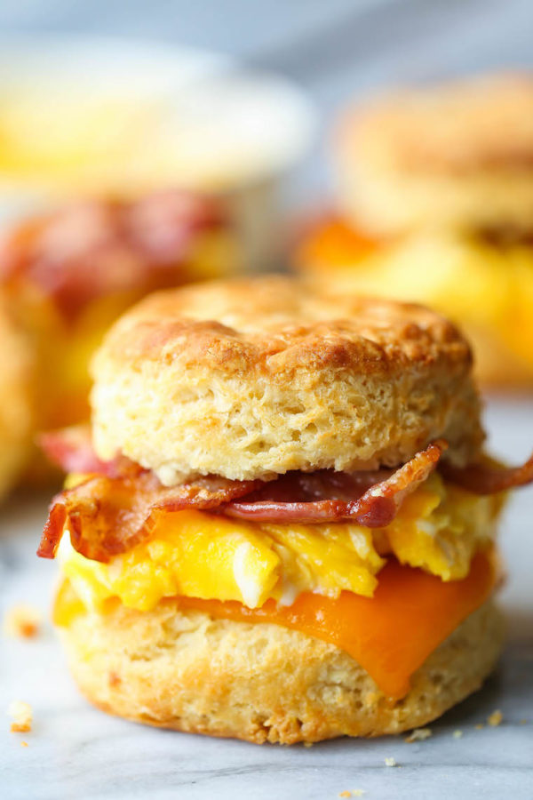

BreakFast Biscuits

Size:87,0 kilobytes (86,987 bytes).
The homemade version of a fast breakfast biscuits you can exchange toppings to fit your taste buds.
The Preparation takes 10mins , cooking 10mins. total 20mins
Nutrient Facts: 482 calories; protein 17,69; carbohydrates 13,3g; fat 39,7g; cholesterol 163,6mg; sodium 896mg
1. Ingredients
- 1 (10 ounce) can refrigerated buttermilk biscuit dough.
- 1 pound bacon
- 5 eggs
- 1/4 cup of milk
- 3 tablespoons butter, softened
- 10 slices cheddar cheese
2. Steps
- Preheat oven to 400 degrees F (200 degrees C).
- Place biscuits 2 inches apart on an ungreased cookie sheet, bake in preheated oven for 8 to 11 minutes or until golden brown.
- Place bacon in a large deep skillet and cook over medium-high heat until evenly brown.
- In a larg bowl, beat together eggs and milk . Heat a lightly oiled skillet or medium heat, scramble eggs to your liking.
- Cut open biscuits, lightly butter, layer with eggs, bacon and cheese.